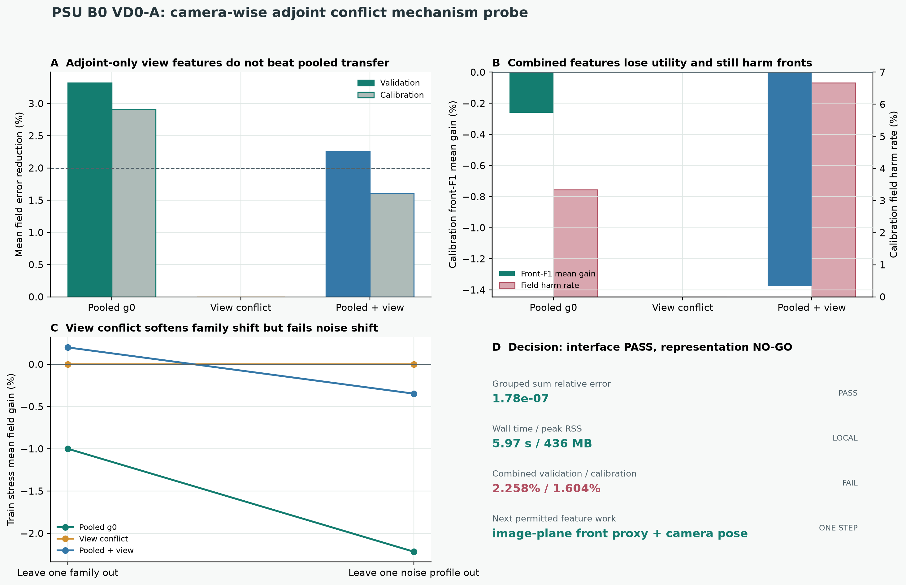

{kind=link}
v3k-F 确认半收敛与停止缺口
discrepancy 对 noise OOD 平均 +7.10%，但伤害率 12.5%；联合 OOD 对同 PBB endpoint 仍略退化。learned stop 继续关闭。
读可部署停止审计当前主线已经收窄为一个可证伪问题：怎样从多相机 BOST 的逐视角观测中，安全选择固定 SPD 频谱专家，在同样 4F+4Aᵀ 预算下同时改善三维场误差与反应前沿。页面把均值收益、坏尾部、front 保真、数据泄漏和真实迁移分别记账。
VD0-A 已经把九台相机的 g₀,ᵥ=AᵥᵀWᵥyᵥ 在一次射线散射遍历中拆开，求和回到 pooled 伴随的最大相对误差只有 1.78×10⁻⁷。但 18 维范数/夹角/抵消统计拼接 pooled 特征后，validation/calibration field gain 只有 2.258% / 1.604%，calibration harm 6.67%、front mean -1.376%，所以接口 PASS、表示 NO-GO。
find() 掩膜为 1-based；作者 Python/TensorFlow 直接 gather。真实 inactive mask 最大值等于测量总数，必须显式减 1。drop_any_out 却排除 99,617 条；当前不从 opened 数据挑阈值。risk_validation 选参，随后在未参与选择的 risk_calibration 相对三种子 learned 均值把场误差再降低 4.94%；验证集降低 5.00%。4F+4Aᵀ 的经典 Krylov 方法淘汰。g₀=AᵀWy 的 44 个特征确实含形态信号；四专家 OMSE 在 calibration 只有 +1.29% 且 harm 6.67%，分类路线不足。g₀ 转向逐视角 residual/backprojection set，并把 field utility 与 front preservation 分开预测。当前没有实验三维真值、真实 flow-off covariance、独立 repeat，也未完成 UNO-CG、NeuralIF、TV-superiorized PCG 公平对照，故不宣称新算法成功或 OERF 实验有效。用筛选器区分局部正信号、完整判决失败和下一门槛；正信号不自动等于 gate pass。失败卡不是历史包袱，而是新算法结构的约束来源。
discrepancy 对 noise OOD 平均 +7.10%，但伤害率 12.5%；联合 OOD 对同 PBB endpoint 仍略退化。learned stop 继续关闭。
读可部署停止审计IID +72.08%，joint OOD 却 -326.51%，96.88% 样本伤害。大 IID 提升不能成为算法结论。
看未门控报告新字段/几何池 test 平均 +21.77%，最大种子伤害 0%；train/validation/test geometry id 无重叠。
看 fresh 报告在 CG-PDNO 上把 test gain 从 +21.77% 压到 +13.36%，且验证尾部未改善。当前不纳入主模型。
看诊断 JSON独立锁集相对 PBB 平均 -17.90%，p10 -31.42%，100% 样本伤害；说明“网络修正弱数值基线”没有论文价值。
看 v1 报告锁集平均 -0.102%，p10 -2.819%，伤害率 19.44%。均值接近零不等于可靠。
看 v2 报告锁集平均 +0.281%，但 p10 -0.831%、伤害率 7.5%，没有达到预注册 2% / 0 / 5% 门槛。
看 v3 报告选择集 raw ensemble 平均 -0.546%、伤害率 19.44%；无阈值同时满足覆盖、p10 与 harm，算法自动全回退。
看 v4 报告锁集 mean +1.753%，但 p10 -17.784%、条件伤害 37.5%；34/36 次选到孔径网格端点。五项 gate 只过两项。
看 v5a 首开复盘旧 M0 将 soft support 的 320 个正数全部激活；6/6 端点与 0 coverage 只能作缺陷轨迹。修正后为阈值 0.05、96/320。
读缺陷说明72 行收敛扫描中仅 (29,41) 与 (35,41) 同时通过；M1 冻结用 (35,41)，native/shared/gain-profiled 三口径均 6/6。
看收敛报告oracle 6/6，SSE-only 5/6，fixed-ridge 4/6；11 个 accepted 中 5 个 audit RMS 增加，最坏 +32.11%。
看 M1 报告最近孔径 3/6，六块 κ 全撞上界，真删相机稳定性均值 0.375；0/48 接受只能说明回退生效，不能说明方法安全有效。
看冻结报告Morozov 0.50 的 5/6 是 opened-truth 十选一；单位 discrepancy 为 0/6，GCV 为 3/6。相关噪声、oracle σ/support 与仅 2 rigs 共同阻止方法冻结。
读假设审计用 residual-DF 归一化后，target 1.0 达到 4/6、0 radius boundary；exact covariance 对 GCV/UPRE/DF-corrected 都无稳定增量。只保留自由度机制，不保留 oracle whitening 叙事。
看成对诊断raw field mean -0.077%、p10 -3.655%、25% harm；outer gate 2/48 且 audit 2/2 harm，changed-radius outer-audit correlation -0.104。
读 NO-GO8 个固定 predictor 中，残差场虽有 17/24 描述性 sample sign，但只有 1/3 block 和 0/2 rig 同号；不做 ranking 或 threshold sweep。
读可复核边界补齐 zero-correction 后，Fisher query 为 -4.083%、signed probes 为 -4.270%，两者均 0/4 cells 为正；design-lock rows 始终为 0。
看 v1 报告相对解析 source correction，truth-field correction、paired-target shared field 与 clean target 的不可实现上限分别保留 51.0%、66.8%、70.6% target headroom。
看上限分解三种子 prediction ensemble 在 opened validation 为 +6.329%、4/4；三维 L2 平均 +5.07%，40 个场中 70% 变好。ensemble 是 post-open 选择，不能开锁。
看 ensemble 诊断不重训迁移到 4 rigs × 2 新拓扑：target cell mean +4.736%，但仅 3/8 为正、最坏 -8.287%；field truth 仍 +3.69%、76.56% 变好。
看逐 cell 报告extension 总体 RMSE：ensemble 5.6119，PBB-32 4.8450；ensemble 相对 PBB 为 -15.83%，仅 1/8 cells 胜出，最坏差 50.69%。
看冻结强基线报告SFIO-PAPBB 在 proxy B=11 相对 PBB-11 为 +3.378%，但这是看过 extension curve 后的 post-open 点；train-selected 版本仅 +0.405%、4/8。
看预算前沿固定 8F/9A 候选相对 PBB-9 为 +2.575%，但只有 8/18 cells 为正、最坏退化 6.643%，且本机慢 5.14×；三门全部失败。
看首开报告source/target gain 的 field/cell Spearman 为 0.554/0.802、6/6 rigs 同向；自然零阈值仅 +1.543%，正 cells 55.56%，selected harm 22.77%。
看防泄漏诊断reserved-positive fallback 为 +3.405%、12/18 cells、worst -0.986%，但 selected harm 33.71%，rig D 的 field Spearman 仅 0.016。
看完整 NO-GOGC-BiLOC discrepancy error 0.8285，full-matrix ridge 0.5217；前 16 个 measurement/voxel 奇异方向仅覆盖 34.0%/38.4% 能量。
看结构筛选truth geometry 只移除 8.39% 失配；每相机 5×5 kernel oracle 仍为 0.9043。有限孔径效应必须细化到 ray 与深度。
看核诊断row-wise oracle mean/worst 为 0.3587/0.4084，未过预设 0.35；两阶段 predictor 为 0.8160。它只生成端到端学习假设。
看 oracle 与预测分离891 参数 ray-kernel error 0.7707，相对 full-matrix ridge 改善 5.359%，低于 10%；aggregate worst ratio 0.777 也不等于逐 rig 无伤害。
看稳定化报告三种子 ensemble error 0.7485，只赢 6/12 rigs，最大 paired-rig 退化 13.69%；aggregate worst ratio 0.761 不能授权安全门。
看 V6A NO-GO64 维 toy 中，27-gate 对同族 truth 近数值精度；加入模型外残差后，K=32 hidden-action error 仍为 11.88%，且被同预算最小范数校准的 10.80% 反超。它只通过查询/伴随协议，不打开 V6B。
看双侧结果模型外 K=32 从 gate 11.999% 降到 8.383%，但 in-class 从 0.0163% 恶化到 0.1970%。结构 gate + residual calibration 有潜力，却不是统一胜者。
保留正负两侧K=32 时 in-class 激活中位数 0、模型外 0.9997；DF-gated SRCO 保持 gate 的 0.0178%，并把模型外 error 降到 8.768%。covariance 是 generator-known，结果不授权预注册、真实安全或论文主张。
看逐 rig 与激活siz=[2160,2560,9]；400×350×350 网格反推 150×130×130 mm。19 个方向样本的单位范数最大误差 2.32e-8，9 个相机中心被独立解析。
11/11 源文件 AST 通过，但当前缺 TensorFlow、默认路径/checkpoint 缺失并有 6 个静态 blocker；仅三组常驻数组下界已约 9.25 GiB。
看机器可读 preflight49,766,400 条射线中，cone 总路径有 9.8976% 落在 box 外；250,597 条 full-box-zero 中 182,023 条仍被 cone 区间使用。这是几何 NO-GO，不是重建结果。
看严格公开 JSONA1 改变 1,879,113 条射线、移除作者总路径 2.4282%，且产生 789,416 条显式零长度行。它保留双锥与 miss→box，不是最终物理域。
看 A1 公开汇总B0/B1 的全量端点、cone 径向/中点、长度与有限性不变量通过。但 B1 只保留 B0 路径 15.1880%，并排除 1,350 条 view-0 active 射线，所以只能作 sampling-hull 消融。
看 B0/B1 公开汇总QMC-8/16/32 下 active B1 固定分母权重保留 99.99465% / 99.99198% / 99.96442%。三组设计非嵌套，无置信区间；不是 continuous containment 或重建结果。
看 B2 严格摘要QMC-32 active B1 中，87.5% / 93.75% floor 排除 1,773 / 4,405 条，drop-any-OOD 排除 99,617 条。阈值未选择，held-out gate 仍锁定。
看五政策账本axis 反号使 active hit/IoU 归零；15° 只保留 48.7807% active hits；六个 5 mm vertex stress 的 active support IoU 为 89.3126%–93.0639%。它只证明参数敏感，不授权选参。
看 12 变体严格摘要9 support + 7 development + 18 primary + 12 camera + 24 joint = 70；每个视角恰好一次。六个未见 rotation run 是独立主审计块，像素不能伪装成重复实验。
看冻结协议摘要评分器绑定 checkpoint/config/data 哈希，拒绝重复视角、路径逃逸、mask 重叠和缺失 18-view 网格；同时强制六块 sign、repeatability、p95、ambient 与 calibration 五门。
看评分器九视角 2,304-ray 子集上，16³/32³ CPU64 dot defect 为 4.97e-16 / 1.78e-16，MPS32 为 7.28e-8 / 9.89e-8。合成 residual 0.005 仍对应 field-L2 0.450，禁止把重投影写成三维真值。
看接口门禁10,628,822 条 support rays、约 1.70 亿 QMC samples 上，float32 random-dual defect 为 2.04e-5，略高于冻结 2e-5；float64 为 3.46e-15。门槛没有事后放宽。
看精度门禁固定 4F+5Aᵀ，16³/32³ support residual 为 0.78771 / 0.62713，绝对下降 0.16058、相对改善 20.39%；九个 support views 全部同向。它是分辨率信号，不是 field truth。
读完整门禁5.017 GB cache 在 14.94 秒内构建；direct/cached forward 与 adjoint relative difference 均为 0，pair 中位数 37.92→17.04 秒，same-session 加速 2.225×。
看冻结 benchmark原 32³ reference 与 cached replay 的 residual 绝对差为 0，volume relative difference 1.17e-16；4-step optimization 218.03→74.95 秒。只提高吞吐，不提高证据等级。
看 reference 对照相对 validation-selected Sobolev，IID 为 +4.26%–+4.62%；joint OOD 为 -0.43% 到 -0.20%，p10 约 -4.5%，三种子 >1% harm 均 33.3%。当前无门控候选正式 NO-GO。
读完整判决4–5-view OOD 上 correction coverage=0，使 joint harm 从 33.3% 降到 0；6–8-view family OOD 仍有 20.8%–25% harm。实现门通过，view-only 方法门失败。
读机制诊断五个 support fresh split 的 coverage 为 26.4%–47.2%、平均 gain 为 +1.04%–+1.66%；3–5-view 两组精确回退，仍有 4 条 accepted harm。特征契约缺陷使 conformal 解释关闭。
读原 fresh 判决504 条部署特征逐值复现冻结报告；改回 calibration 顺序后 7 条决策改变，prediction 最大移动 0.826%。经验指标不消失，但 split-conformal 解释正式撤回。
读完整诊断294 个 development-only 候选中选出的阈值在 opened fresh 上拒掉 correlated-noise shock，但 support IID harm 不变；当前 development 缺少能自然选出 plume 风险门的压力样本。
读开发筛选同为 4F+4Aᵀ，PCGLS-4 在 validation / calibration 相对三种子 learned 均值降低场误差 5.00% / 4.94%；168 个 opened 诊断场 pooled field-L2 为 0.6246，对手为 0.6711。
读强基线判决2,527 参数、三种子、同 4F+4Aᵀ：validation field gain +0.016% 至 +0.054%，calibration -0.165% 至 +0.056%；measurement residual 却改善 +0.596% 至 +1.709%。
读 V1 判决105 个同预算固定 SPD 候选中，逐样本 truth oracle 在 validation / calibration 为 +6.52% / +7.22%；形态标签为 +2.69% / +2.38%，view count 与 view+noise 路由 calibration 均为负。
读上限审计44 个 g₀=AᵀWy 特征比 geometry/noise 元数据更能识别专家；hard selector 有正迁移信号，但没有候选同时通过 train OOF accepted-harm 门。
修正精确回退后，strict OMSE validation +2.03%、calibration +1.29%；calibration 的 >1% harm 为 6.67%，说明“最可能形态”不是可靠的逐样本收益下界。
看 OMSE 摘要strict OGSE validation +2.42%、calibration +1.65%，95% CI 下界均为正且 harm 0%；六项开发门只差 calibration mean。放宽路线虽过均值，却有 -12.67% / -7.37% 最坏退化。
读严格判决mean-only RQ 在 validation/calibration 为 +3.321% / +2.907%，95% CI 下界均大于 0，p10 为 0。它证明单专家安全插值比旧 softmax 混合更有潜力，但 calibration 仍有 1/30 个 >1% field harm。
读 RQ 判决RQ strict calibration 的 front-F1 均值 -0.261%、p10 -3.515%，相关噪声斜激波最坏 -30.876%。因此 field 主门不能单独授权独立 repeat 或论文成功主张。
看四联图显式加入 field/front lower-quantile 与 harm heads 后，validation/calibration field gain 只有 +1.192% / +1.382%；field harm 为 0，但 calibration front 均值仍为 -0.060%。
看公开摘要每条射线散射贡献只生成一次，再写入对应相机槽；九视角求和与原伴随闭合。它是一轮 grouped 调用，但保留九份体场仍增加内存和有限差分后处理。
看接口源码pooled+view strict 在 validation/calibration 为 +2.258% / +1.604%，calibration field harm 6.67%、front mean -1.376%；pure view-conflict 没有严格路线。
读完整判决拼接路线在 leave-one-family 从 -0.999% 提到 +0.199%，但 leave-one-noise 仍为 -0.347%。下一轮只补尚未测试的图像平面 ridge/频谱和 camera pose；未过门不训练 DeepSets。
看四联图有多光圈/标定 probe 就冻结 V6B few-query fresh gate；有带 timestamp 的连续序列就对齐 TDBOST 做 event-conditioned 4D。
看师兄审核问题| 实验 | 证据域 | 核心指标 | 稳定性 / 对照 | 判决 |
|---|---|---|---|---|
| 前驱 unrolled4 | noise OOD | -78.35% | +38.19% | fresh fields 上 0% harm；噪声输入仍为 generator-known |
| 前驱 unrolled4 | joint OOD | -157.41% | +16.20% | 证明 trust 机制可能有用，不证明可部署 |
| CG-PDNO | validation | +41.14% | noise gate +38.29% | 两字段伤害；噪声门未抓住 |
| CG-PDNO | development-fresh test | +21.77% | noise gate +13.36% | 两者 0% harm；保留 raw，停止 noise-only gate |
| Base-Correction v1 | independent lock / PBB | -17.90% | accept 0% | p10 -31.42%，100% harm；固定 PG base 淘汰 |
| PBB correction v2 | independent lock / PBB | -0.102% | accept 100% | p10 -2.819%，19.44% harm；失败 |
| saturation v3 | independent lock / PBB | +0.281% | accept 99.17% | p10 -0.831%，7.5% harm；仍失败 |
| 5-head selective v4 | family-held-out lock / PBB | raw 不授权 | 0% | select 无可行阈值，严格回退，gain 0% |
| blind aperture v5a | unseen family / radius / rig / noise | +1.753% | coverage 66.67% | p10 -17.784%，总体 harm 25%，conditional harm 37.5%；失败 |
| rig-shared profile v5b M0 | 8×8×5 archived / known support bug | raw +0.817% | coverage 0% | 320/320 体素误激活；profile 0/6、truth-field 3/6、matrix 1/6 仅作失败轨迹 |
| rig-shared profile v5b M1 | 8×8×5 development / converged renderer / 96-voxel support | SSE-only 5/6；fixed-ridge 4/6 | coverage 22.92% | accepted inner L2 +9.36%，但 audit increase 5/11、最坏 +32.11%；安全门失败 |
| nested cross-view v5c | new generator families / frozen seed / two rigs | joint radius+κ 3/6；fixed-ridge 5/6 | coverage 0% | κ boundary 6/6、camera-deletion stability 0.375；NO-GO |
| decoupled complexity v5d Phase A | opened v5c / 10 truth-ranked variants / diagonal oracle whitening | Morozov 0.50 5/6*；GCV 3/6 | 不做路由 | *opened-truth 调参；Morozov 1.00 0/6、radius boundary 4/6；NO METHOD FREEZE |
| covariance + residual-DF v5e | opened v5c / exact covariance from clean synthetic truth | DF-corrected 4/6；0 radius boundary | 不做路由 | exact whitening 对 DF-corrected 0 增量；机制信号，不是方法胜利 |
| dual regularization v5f | opened v5c / separate calibration and reconstruction κ | raw mean -0.077%；p10 -3.655% | 2/48 | 25% field harm；accepted audit harm 2/2；outer→audit NO-GO |
| geometry + residual transfer v5g | opened v5f / target operator known / oracle σ | descriptive sample 17/24；r=0.135 | 不做路由 | block 1/3；rig 0/2；NO METHOD FREEZE |
| GC-RIO v0 / signed-probe v1 | new synthetic train/validation rigs；flow-off MAD σ | -4.083% / -4.270% vs zero | target observation 不进 predictor | 均 0/4 cells；NO DESIGN-LOCK OPEN |
| shared-field ensemble v2 | opened validation；3 fixed seeds；post-open ensemble | target +6.329%；3D field +5.07% | 4/4 target cells；70% fields improve | 生成下一假设，不是预注册胜利 |
| new-rig extension v5m | 4 unseen rigs × 2 new topologies；no retraining | target cell mean +4.736%；field +3.69% | 3/8 target cells；76.56% fields improve | worst -8.287%；NO DESIGN-LOCK OPEN |
| strong classical baseline v5n | train-selected PBB-32；same v5m extension | ensemble vs PBB -15.829% | 1/8 target cells；PBB field +24.98% | 纯网络重建器定位淘汰 |
| SFIO-PAPBB v5o | train-selected anchor=0.1, k=32；proxy B=35 | ratio +0.405%；cell mean -0.651% | 4/8 target cells | worst -9.438%；低预算 B=11 仅生成新假设 |
| SFIO-PAPBB v5p | 6 fresh rigs × 3 fresh topologies；8F/9A vs PBB-9 9F/9A | ratio +2.575%；cell mean +0.005% | 8/18 rig-family cells | worst -6.643%；5.14× slower；FRESH NO-GO |
| source-consistency diagnosis v5q | opened v5p；17 source-observable features；label firewall | field/cell Spearman +0.554 / +0.802 | zero-threshold fallback 10/18 cells | overall +1.543%；selected harm 22.77%；NO GATE AUTHORIZED |
| reserved-view reliability v5r | opened v5p fields；1 audit camera excluded from reconstruction | field/cell Spearman +0.548 / +0.674 | reserved sign fallback 12/18 cells | overall +3.405%；selected harm 33.71%；RELIABILITY NO-GO |
| global GC-BiLOC v5s | 12 synthetic development rigs；full truth matrix only for scoring | 0.8285 vs full-matrix ridge 0.5217 | rank 24×24；oracle shared subspace 0.8054 | -58.81%；GLOBAL LOW-RANK NO-GO |
| camera-local tangent v5t | post-open truth-parameter oracle | secant 0.2607；first-order 0.5050 | parameter-gap error 0.5607；no estimator | REPRESENTATION NO-GO；不可部署 |
| calibrated renderer + fixed camera kernel v5u-v5v | truth geometry；synthetic renderer residual | CAL-HOSVD 0.8094；camera-kernel 0.9171 | full-matrix ridge 0.4762；adjoint defect 4.4e-16 | GLOBAL/CAMERA-INVARIANT STRUCTURES NO-GO |
| isolated aperture kernel v5w | only radius 0 vs finite aperture differs | fixed left kernel 0.8074 vs ridge 0.8143 | worst 0.9724 vs 1.4181 | +0.854%；未过 10% |
| ray-conditioned kernel v5x | truth-calibrated aperture-only development | row-wise oracle 0.3587 | two-stage predictor 0.8160；1113× compact | 表示有 headroom；预测 NO-GO |
| stable direct ray kernel v5z | complete operator rows；24 fit + 6 selection rigs | 0.7707；vs ridge +5.359% | worst ratio 0.777；891 params | DEVELOPMENT NO-GO；保留线性基线 |
| ray-kernel hypernetwork v6a | opened synthetic development；3 seeds | 0.7485；vs ridge +8.080% | 6/12 rigs；max paired degradation +13.69%；122.6× compact | NO-GO；STOP CAPACITY ESCALATION |
| V6B protocol conformance | toy in-class + synthetic misspecification；12 rigs；K=4/8/16/32 | in-class 2.4e-12；misspecified 0.1188 | secant@32 0.1080；dot max 2.59e-13；0 truth-adjoint | 协议通过；模型外失败可见；fresh V6B 仍 UNCONSTRUCTED |
| V6C always-on SRCO | post-open new seed；12+12 rigs；0.2% calibration noise | misspecified 0.08383 | in-class 0.001970 vs gate 0.000163 | NOT DOMINANT；生成噪声触发假设 |
| V6D DF-gated SRCO | second-stage post-open toy；16+16 rigs；K=4/8/16/32 | misspecified 0.08768；16/16 胜 gate | in-class p90/max relative harm 0.78%/1.73%；dot 2.88e-13 | generator-known covariance；未预注册、无科学主张 |
| positive spectral preconditioner | 真实 PSU support 几何 + 解析反应流形态；3 seeds；4 stages | IID +4.26%–+4.62% vs Sobolev | joint OOD -0.43% 至 -0.20%；harm 33.3% | 0/3；无门控候选 NO-GO |
| active-view support envelope | 同 opened split/checkpoint；不重训；6–9 views 才启用 learned | joint/view harm 归零；gain 约 0 | family harm 20.8%–25%；coverage 100% | 实现门通过；view-only 科学门失败 |
| OCRRG residual-risk gate | 冻结后 fresh；7×24 fields；3 seeds；真实 PSU support 几何 | support gain +1.04% 至 +1.66%；coverage 26.4%–47.2% | 经验指标 3/3；4 条 accepted harm 来自 2 个样本 | 指标可复现；feature contract fail，conformal 解释撤回 |
| Observable Multi-Veto v2 screen | 旧 development 选 294 个有限候选；opened fresh 只作诊断 | camera veto 拒掉 2/4 harm；plume 仍 2/4 | selected 6-view extra margin = 0%；未事后调到 0.6% | partial mechanism only；不允许 freeze |
| Sobolev-PCGLS-4 strong frontier | validation-only 选 strength/epsilon；calibration 保持未参与选择 | vs learned：validation +5.00%；calibration +4.94% | 4F+4Aᵀ；0 参数；opened stress 每类至少赢 20/24 | 当前 learned steepest direction NO-GO；主线转向 SPD-PCGLS |
| BOST-GC-SPD-PCGLS V1 | risk_train 训练；validation 选 checkpoint；calibration 单次确认；fresh excluded | validation +0.016% 至 +0.054%；calibration -0.165% 至 +0.056% | 2,527 参数；4F+4Aᵀ；measurement residual +0.596% 至 +1.709% | 0/3 NO-GO；先做 conditional-headroom audit |
| finite SPD-PCGLS headroom | 105 candidates；train-only selection；validation/calibration transfer；fresh excluded | sample oracle +6.52% / +7.22%；family label +2.69% / +2.38% | view count +0.76% / -0.26%；view+noise -0.11% / -5.65% | 频谱家族有上限；简单元数据路由 NO-GO |
| OMSE-PCGLS classification | shared first adjoint；4 fixed experts；train OOF；post-open transfer | validation +2.03%；calibration +1.29% | calibration harm 6.67%；最坏 -6.43% | 形态分类 NO-GO；改为逐专家收益与风险 |
| OGSE-PCGLS V2 strict | train-only greedy bank；gain regression；baseline-top exact fallback；fresh excluded | validation +2.42%；calibration +1.65%；CI lower 均 >0 | >1% harm 0% / 0%；4F+4Aᵀ | 5/6 gates；calibration mean 未到 2%，NO-GO |
| OGSE-PCGLS diagnostic | 同 opened development；放宽 OOF risk，只作机制诊断 | validation +3.56%；calibration +2.55% | 最坏 -12.67% / -7.37%；harm 4.17% / 6.67% | 收益潜力存在；风险尾部禁止部署 |
| RQ single-expert mean-only | 13 个有限动作缓存；648 个 train-OOF 路由配置；fresh excluded | field +3.321% / +2.907%；CI lower 均 >0 | field harm 0% / 3.33%；front worst -27.40% / -30.88% | field gate PASS；front safety HOLD |
| RQ quantile + harm | exact LP pinball heads + logistic harm；同有限动作 | field +1.979% / +1.777% | field harm 0% / 0% | 安全性提高但低于双 2% 门；NO-GO |
| MO-RQ field + front | 576 个 train-OOF 多目标路由；post-open front threshold | field +1.192% / +1.382% | front mean +0.375% / -0.060%；field harm 0% / 0% | 效用与 front 安全均未闭合；NO-GO |
| VD0-A grouped adjoint | 逐视角 AᵥᵀWᵥyᵥ；一次 ray scatter；fresh excluded | group sum error 1.78e-7；5.97 s / 436 MB | pooled+view field +2.258% / +1.604%；calibration front -1.376% | 接口 PASS；18 维伴随冲突表示 NO-GO |
Sobolev-PCGLS-4、有限 SPD 上限与 OGSE 先建立了同预算基线。RQ 随后把动作空间收缩为“基线或单个固定专家”，并用 OOF 均值、分位数和伤害概率选择动作。field-L2 主门出现了可迁移信号，但 shock/front 审计揭示 pooled 首伴随特征无法识别跨相机冲突；所以当前最有价值的结果是一个明确的表示瓶颈，而不是一个已成功的新模型。

Aᵀr₄；PCGLS-4 与 learned 都是 4F+4Aᵀ。


RQ 已证明 pooled g₀ 的均值信息够用，却不能识别哪个相机正在支持或破坏 shock/front。下一版把每台相机当作一个带物理特征的集合元素，先编码逐视角证据，再用置换不变聚合预测 field utility 与 front-preservation risk。
g₀,ᵥ=AᵥᵀWᵥyᵥ 的范数份额、两两 cosine 与协方差特征值。
OCRRG 的特征契约缺陷、四条 accepted harm 和 Multi-Veto 漏掉 plume 都仍是真实缺陷；但即使把这些风险门全部修好，也只能让一个已经弱于 PCGLS 的候选更谨慎。继续在旧 fresh 上调门会同时产生数据泄漏和研究资源浪费。

下一候选需要 hard view-support envelope 与 learned residual-risk trust 同时成立。候选只有在支持域内、且白化 residual 分布与相对 Sobolev 风险均可信时才允许修正。
τ_view=0 时逐值回退，不允许近似 fallback。τ_risk 读取跨相机 residual 均值、最大值、离散度和 correction magnitude。
冻结实现只读取第一步可观测量，用 ridge 预测相对 Sobolev 的 gain，再减去 one-sided overprediction quantile。经验 accept / fallback 与重建指标可复现；但 development 与 deployment 的 support 投影顺序不同，所以当前公式只描述设计意图，不再代表有效的 conformal 保证。

solver 实际搜索的是 support 投影后的方向，因此 v2 会只保留一个 canonical feature function，并在 train、validation、calibration、fresh 与 deployment 逐值复用。双支路分数由 opened fresh 启发，只能去新的 independent repeat 接受检验。
VD0-A 已证明逐视角伴随可以审计地暴露，并在一次 ray scatter 后求和复原 pooled；但只用范数、夹角和抵消统计，不能安全识别相关噪声与 front 风险。当前最小新假设进一步收窄为：把每台相机的二维位移图 front proxy 和真实 camera pose 与对应伴随贡献成对保留，才可能区分“物理 front 一致支持”和“某些视角被相关噪声污染”。
g₀,ᵥ=AᵥᵀWᵥyᵥ grouped sum error 1.78e-7；额外内存/FDA 成本已记账first-step residual contraction 只有跑完第一步后才存在，不能拿来选择第一步之前的固定预条件器。若后续使用它，必须明确采用“先跑一步基线再 restart”或 Flexible CG，并把新增调用与重启代价列入公平预算；当前 VD0 不使用该特征。
g₀、per-view residual only、per-view adjoint only、两者联合四组输入消融。risk_train 只做 OOF 模型和阈值选择；risk_validation 与 risk_calibration 现已打开，只能用于当前机制开发。旧 fresh 也已打开，只作诊断。VD-RR 必须在全新冻结分区上做一次真正 independent repeat，不能继续在这些数据上调到好看。

它们不是当前训练并行线，避免在没有对应证据时同时摊开三个大模型。
当前直接推进 VD-RR-PCGLS 的接口门和低容量探针；RQ 已完成并判 HOLD。有限孔径算子校正与 4D 突变保持不并行烧算力，只有拿到对应 OERF 标定或连续序列后才启动。
把每台相机的白化 residual、伴随贡献和 front coherence 保留为集合元素，分别预测 field utility 与 front-preservation risk；只有双门通过才选择一个固定 SPD 专家。
每条 ray 用几何条件化小网络生成局部 3D 核，校正 thin/high-fidelity aperture discrepancy；同一核给出 forward/adjoint。
只继承 V6A 的 ray-local 结构假设，不继承权重。在 query-limited cache 从头训练；每个 fresh rig 用 K=32 次 high-fidelity forward、0 次 truth adjoint 拟合 27 个 channel gates。
27-gate 先解释 ray-local 有限孔径结构；toy 用 generator-known 对角 covariance 判断是否启用 rank≤K 补丁，真实部署必须改由独立 flow-off repeats 估计噪声地板，并用解析 transpose 进入 inverse。
photon、flow-off covariance；V6C/V6D 永久排除出 fresh以 TDBOST 为直接基线，把可输运低秩主体和稀疏创新拆开，专门评估新生、熄灭、拓扑断裂、缺帧和相机异步。
若组内数据延迟，完成结构证伪链、PCGLS 强基线、真实数据 loader/adjoint audit 和一套可复现 benchmark；论文主张保持关闭。
没有公开资源同时提供多光圈、多布局、受限 forward、可核验 adjoint 与实验三维真值。PSU、photon 和 OERF 各自只承担一段证据，不能拼成“已经外部成功”。
验证伴随、梯度、support、field/front error、消融和统计协议。
不能证明：真实成像链或模型失配。
打开当前可复现实验photon CUDA renderer在 NVIDIA/CUDA 服务器冻结 f-number、focus/object distance 与 camera layout，生成 fresh-A/B/C 和已知密度场，做跨 renderer synthetic smoke。
不能证明：真实光学或 OERF 有效；仓库也没有现成精确 Fᵀ。
70 views 中按公开流程做 9-view NIRT、held-out deflection、真实 mask/噪声/标定 loader，只检验固定装置 reconstruction/reprojection consistency。
不能证明：跨 f-number 泛化或实验 field-L2；f/32 与 f/22 属于不同相机/镜头，不是 aperture sweep。
数据 DOINeRIF 数据需合理请求；TDBOST 公开代码无根许可证且投影器/完整数据不齐。只有独立 session、phantom、held-out camera 或 timestamp 合同满足后，才打开 apparatus-specific 或 TRAIL-4D 主张。
不能公开：未授权训练包、组内原始数据与私有派生产物。
NeRIF · TDBOST 只读入口SCHEMA_CONFORMANT，没有运行 NIRT、没有 held-out reprojection、没有三维结果。原数据与派生产物只在忽略 Git 的本机私有存储中保留。其余文件包含待匹配公开版、重复项或失败下载，不能把“磁盘里有文件”当成“已审计全文”。私有库继续本机使用，公开页面只放 DOI、合法开放全文与自写分析。
当前阅读目的不是收集更多模型名，而是确定：怎样保持正定与 Krylov 结构、什么强经典基线必须补、现有 learned preconditioner 已经占据什么，以及 BOST 梯度观测/相机集合还能留下什么独立贡献。
读：continuous refractive-index/gradient field、9 视角合成/实验设计、光路积分与 Bunsen flame。
边界：数据是合理请求，不存在可直接宣称已复现的公开训练包；我们的 few-query operator correction 也不能冒充首个 neural-field BOST。
读：XY-ZT/XZ-YT/YZ-XT 张量分解、轻量网络与时空保真。
边界：公开仓库可只读审计数据格式与 4D 结构，但无根许可证、投影器和完整数据不齐；未经授权不改作、不重发。
读：折射率重建如何进入 PIV 速度误差补偿。
提取：未来主指标是否应从 field L2 转为 velocity correction。
读：spectral kernel、mode truncation、resolution experiment 与 factorization。
提取：thin-front 高频丢失和规则网格偏置。
读：把 neural operator 作为 flexible conjugate-gradient 的非线性预条件器、Krylov residual 采样和 solver-aligned loss。
边界：“神经算子 + Krylov preconditioner”已由 ICML 2024 占据；我们的贡献必须来自 BOST 梯度观测、有限孔径失配、可变相机集与严格回退证据。
读：如何用 calibration data 预计算谱滤波器、风险函数与参数选择，而不是默认手工 Tikhonov。
提取：learned spectral direction 必须同时比较 validation-selected Sobolev、Tikhonov/TSVD 和非神经最优滤波；仅出现 Fourier multiplier 不构成新意。
读：静态 residual 预训练后，再用 Krylov 子空间主角度做 solver-aligned 微调。
边界：这是 2025 预印本，不是 BOST 证据；它提示下一轮 loss 应关注迭代轨迹和跨几何，而不只看最终 field loss。
读：branch/trunk、sensor/query 与 inverse operator 组合。
提取：固定 sensor branch 为什么不天然适配可变相机集合。
读：不规则几何到 latent grid、可变传感器置换不变编码。
提取：ray-set encoder 必须击败的结构对手。
读：每层 forward/adjoint、learned primal/dual memory 与 CT 设定。
提取：CG-PDNO 不能重复声称“首次把物理算子放进网络”。
读：I-A⁺A 投影、数据一致性与收敛边界。
提取：reprojection 好不等于场正确；VN-UQNO 的理论起点。
读：受限 optical access、少角度 density-gradient field 与 nonlinear ray-traced LES。
提取：普通 sparse-view neural field 位置已经被占据。
读：physics-informed inverse、posterior uncertainty 与可观测性。
提取：不确定度必须校准，而不只是 ensemble 方差。
读：raw distortion 与 volumetric reconstruction 的统一优化。
提取：RI-DualBOST 必须证明跨 pattern 泛化或 uncertainty propagation 的独立价值。
读：70 views、NIRT/TV、9-view limited reconstruction 与 held-out validation deflection。
提取：第一个真实 loader 与相机留出协议；不要把站内简称当正式方法名。
读：learned optimizer 与 generic fallback 的条件切换、OOD 与收敛边界。
提取：“learned + fallback + gate”不是空白；BOST 必须给出自己的可观测门控证据。
读：校准样本、风险函数、有限样本控制与交换性假设。
提取：当前 one-sided gain bound 只能约束同分布校准语境；任意 morphology/noise OOD 不自动受保证。
读：怎样让风险控制随样本难度自适应，而不只依赖人工给定的离散群组。
提取：它支持“学习难度条件”的方向，但当前 BOST calibration 太小；v2 先限制为两个物理 stress 支路，不能直接声称任意条件控制。
读：当算法先挑出“值得接管”的样本后，为什么普通 marginal coverage 不能自动转成 risk | accept。
提取：OCRRG 的下一理论版本要审计 selection-conditional target；coverage 与 accepted harm 必须同时报告。
读：学习预条件器如何进入 CG、solver-aligned 训练与 DeepONet 线性系统预条件。
提取：“网络做预条件器”不是新意；BOST 贡献必须来自梯度观测、强 Sobolev、可变相机、可观测风险门与 exact fallback。
读：当预条件器随迭代变化时，为什么要显式正交化搜索方向，以及变化幅度怎样影响收敛。
提取：静态 learned multiplier 可继续用标准 PCGLS；只要让网络逐步看 residual，就必须转入 flexible CG 对照，不能沿用标准 PCG 叙事。
读：GNN 如何生成稀疏 incomplete factorization，以及只靠 matrix-vector products 的 stochastic Frobenius loss。
提取：可逆/稀疏因子和 solver-level 迭代下降已经有成熟先例；我们的低维频谱参数化必须在 matrix-free BOST、可变相机与跨分辨率上形成差异。
读：Unitary Neural Operator 作为机器学习预条件器，怎样把收敛性质嵌入混合 CG solver。
提取：“FNO 风格网络 + CG + convergence by construction”本身已不够新；BOST 方法必须给出梯度测量、几何条件化、前沿保持和真实 held-out camera 的专属证据。
读：在保持投影数据一致性下降的同时，用 total variation 作为次级准则改善病态层析图像。
提取：thin front 改善若可由非学习 TV superiorization 获得，就不能归功于神经预条件器；它必须进入同 calls 或同 wall-time 对照。
读：f/22 到 f/4 的真实有限孔径实验，以及 cone-ray forward/inverse 如何解释 thin-ray 失配。
边界：论文是最直接的物理依据，但数据和代码未公开；不能把阅读证据写成已跑外部 benchmark。
读：用连续 RBF 参数化折射率/密度场并直接处理 BOS tomography 的 forward/inverse。
提取：RayKernel-DCO 不能只比 voxel ridge；必须证明 operator correction 对连续场重建也有价值。
读：forward 与 adjoint correction、收敛条件和 approximation error。
提取：不能只学 forward residual；伴随与 inverse stability 也要审计。
读：低保真 operator 与少量高保真数据如何学习 residual correlation。
提取：“便宜物理 + 少量高保真修正”不是 SRCO 的新意；必须把贡献限定在 BOST 结构、查询协议、噪声门和 inverse 证据。
读：learned restriction 与 simplified-physics correction 两条范式。
提取：RigCal 先做低维物理参数，学习模块只能在剩余 discrepancy 有证据时加入。
读：ideal / mismatched / oracle-corrected / blind-calibration 四情景。
提取：复现实验表应分开“模型本身强”与“对 mismatch 稳健”。
读：有限样本风险控制、coverage 与 reject option。
提取：v5b 必须报告 risk | accept，并说明保证依赖的交换性/分布假设。
读：pinball loss 怎样从条件均值转向条件分位数，以及不同分位对应什么不对称误差代价。
提取：RQ0 不再最小化专家 gain 的 MSE，而是直接估计低分位；但小样本下分位估计仍需 OOF 和独立 calibration。
读：分位模型如何用 held-out residual 做有限样本区间校准，以及异方差下为何比固定宽度区间更有效。
提取：可用于构造 per-expert gain lower bound；保证依赖交换性，不能自动覆盖新形态、真实 OERF 或 selection-conditional risk。
读：多个未知信号、未知测量增益、稀疏先验与显式 normalization gauge。
提取：共享多场和固定尺度都不是新意；反应场也不自动满足稀疏假设。
读：消去线性变量后的 reduced objective/Jacobian 与约束处理。
提取：VarPro 改善优化效率，不会消除 gauge 或凭空制造孔径信息。
读：hat matrix、effective degrees of freedom 与未知噪声下的预测风险。
提取：为什么不同孔径算子不能只比较各自最小训练/CV residual；先把模型复杂度写进分母。
读：已知噪声水平时，选择恰好把 residual 降到噪声尺度的正则。
提取：把 v5c 的 truth-scaled sigma 替换成 flow-off 标定，是走向真实 BOST 的必要条件。
读：Reeves 与 Mersereau 已用 GCV 联合识别 blur、图像模型和正则参数。
提取：“联合选光学参数与正则”不是原创；我们的新意必须来自 BOST 物理、泄漏控制和真实 f-stop 证据。
读：结构不可辨识、实际不可辨识、完整 profile 与实验设计。
提取：局部正曲率不等于全局唯一；结构失败需要新测量而不是更强网络。
读：模型误差如何把物理参数估计推向错误值。
提取：观测拟合改善不能证明 effective aperture 等于真实入口瞳。
读：不精确 forward 下的 subspace/stripe 更新与 learned inexactness。
提取：未来 discrepancy-aware BOST 必须与它比较，不能只打普通 FNO。
读：differentiable ray model 如何联合优化几何参数与重建。
提取：“联合几何校准 + 重建”已不是空白；新意必须落在 BOST 的 ray-local aperture discrepancy、少查询和严格伴随。
读：hash encoding、离散梯度、3D mask 与大规模折射率场表示。
提取：更强编码器本身不是 RayKernel-DCO 的创新；未来 inverse 比较不能故意用弱 neural field。
读：满足 secant 条件的最小改动、Broyden 更新与结构约束。
提取：低秩 residual update 公式不是新意；需要 BOST 结构保持、probe 设计和误差界。
读：misspecified physics prior 加 learnable correction 的通用框架。
提取：“物理算子 + 加性校正”已经被直接提出；SRCO 只能从 strict query、BOST 几何、noise gate 和 inverse consistency 建立差异。
读：有限预算下的观测设计、相关误差 covariance 与信息准则。
提取：主动选择观测不是新意；BOST probe 必须用 flow-off covariance 做 whitening/加权，并与随机正交同预算比较。
读：主动输入函数、分辨率、极端事件与选择性时间步怎样节约高保真数据。
边界：这些方法选训练样本或时间步，不等于在目标 rig 上选校准输入向量；只能启发 acquisition，不能充当 SRCO 的直接先例或胜出证据。
基础薄弱时先把“会说”变成“能手推、能复现、能证伪”。RQ0/RQ1 与 VD0-A 已完成；当前先理解为什么 grouped adjoint 接口正确却没有带来安全迁移，再实现 VD0-B。任何 DeepSets 或 fresh repeat 都必须等显式特征、风险目标、专家动作空间、基线和门槛冻结后再启动。
Ax / Aᵀzphoton CUDA renderer 时才租服务器。看算力与服务器门禁九个 support views 已通过 shard、mask、setup、SHA-256、shape、dtype 和上下游 manifest 重验；B1 参数依赖、全量 float64 伴随、固定预算 CGLS 与同 calls 分辨率门禁也已完成。绿色只表示执行或协议完整，红色科学判决来自真实计算域与未完成物理门，不是下载、VPN 或训练速度故障。

仍不能声称：support fit 等于真实 3D truth、held-out camera 泛化、TensorFlow NIRT、NeRIF/FNO/DeepONet superiority、25 度 cone 的物理边界含义。


| 层级 | 空间域 | 当前证据 | 判决 |
|---|---|---|---|
| A0 author exact | 双锥非零优先；miss 回 box | 0/3/6 视角域不一致；pooled 域外 9.8976% | 真实训练 NO-GO |
| A1 clipped hybrid | A0 裁入前向 box；保留 fallback | 移除总路径 2.4282%；正长度端点机械合法 | 兼容消融，不是固定域 |
| B0 forward box | 显式 t≥0 slab 固定计算域 | 49,515,803 条命中；端点/长度/有限性不变量通过 | 保守主基线 |
| B1 one-nappe cone-box | box ∩ 单叶锥；miss 不回退 | 机械通过；B1/B0 路径 15.188%；1,350 active miss | 待 axis/vertex/angle 物理审核 |
| B2 aperture indicator | 逐样本 1_D(x)；固定原分母 | 8/16/32 点完成；active B1 最低保留 99.9644% | 离散支持审计完成 |
| B3 geometry-safe mask | keep / empty / 87.5% / 93.75% / any-OOD | 不改标签；strict policy 在 QMC-32 删除 99,617 active B1 | 政策未选择；held-out 锁定 |
| B4 parameter stress | axis / 15-35° / vertex ±5 mm | 12 变体九视角完成；axis flip active IoU = 0 | 依赖已量化；不得选参 |
| H0 70-view protocol | 9 support / 7 dev / 54 final audit | 70/70 无重叠；primary 为六个 rotation blocks | 协议冻结；payload sealed |
| I0 B0 inverse interface | scalar perturbation + zero-boundary gauge | 真实几何 16³/32³ exact A/Aᵀ 通过；合成 inverse 闭环 | 接口通过 |
| I1 full support CGLS | 10,628,822 rays；QMC16；float64 | dot 3.46e-15；固定 4 步 residual 0.78771 | 数值闭合；无 field truth |
| I2 resolution gate | 16³ vs 32³；同 rays、dtype、4F+5Aᵀ | 0.78771 → 0.62713；九视角全部改善 | 32³ 冻结为低分辨率 reference |
| I3 exact compact cache | 固定 lower corner/fraction/projection/scale | F/Aᵀ diff 0；pair 2.225×；CGLS 2.909× | 后续 32³ 快速物理层 |
当前最短链从 Sobolev-PCGLS-4、有限候选上限、OGSE 到 RQ 单专家与多目标 front 审计；每个候选保持 4F+4Aᵀ，并把 private sample rows 与公开摘要分开。PSU 几何、全 support inverse 和 exact cache 仍可重放；VD-RR、真正独立 repeat、官方 NIRT、真实 held-out reconstruction 和 photon CUDA 尚未运行。
PYTHONPATH=. .venv/bin/python -m pytest -q # 当前主线最短复核：上限、可观测特征、专家路由、论文图 PYTHONPATH=. .venv/bin/python -m pytest -q \ demo_t16_operator/test_psu_b0_classical_baselines.py \ demo_t16_operator/test_psu_b0_initial_normal_features.py \ demo_t16_operator/test_psu_b0_morphology_spectral_experts.py \ site_tools/test_run_psu_b0_pcgls_conditional_headroom.py \ site_tools/test_run_psu_b0_observable_morphology_probe.py \ site_tools/test_run_psu_b0_omse_pcgls_development.py \ site_tools/test_run_psu_b0_ogse_pcgls_development.py \ site_tools/test_plot_psu_b0_ogse_pcgls_development.py PYTHONPATH=. .venv/bin/python site_tools/plot_psu_b0_ogse_pcgls_development.py \ --input docs/psu_b0_ogse_pcgls_development_public_summary.json \ --output demo_t16_operator/results/psu_b0_ogse_pcgls_development/psu_b0_ogse_pcgls_development_figure.png # RQ 单专家、field/front 多目标审计与论文图；全部排除 fresh PYTHONPATH=. .venv/bin/python -m pytest -q \ demo_t16_operator/test_psu_b0_risk_quantile_experts.py \ site_tools/test_run_psu_b0_rq_ogse_pcgls_development.py \ site_tools/test_run_psu_b0_mo_rq_ogse_pcgls_development.py \ site_tools/test_plot_psu_b0_rq_ogse_pcgls_development.py PYTHONPATH=. .venv/bin/python site_tools/run_psu_b0_rq_ogse_pcgls_development.py \ --config demo_t16_operator/configs/psu_b0_rq_ogse_pcgls_development_v1.json \ --development-report private_library/external_datasets/psu_bost_flight_body/b0_residual_risk_development_v1/private_report.json \ --probe-private-report private_library/external_datasets/psu_bost_flight_body/b0_observable_morphology_probe_v1/private_report.json \ --view-root private_library/external_datasets/psu_bost_flight_body/all_view_geometry_audit \ --device mps \ --private-output private_library/external_datasets/psu_bost_flight_body/b0_rq_ogse_pcgls_development_v1/private_report.json \ --public-output docs/psu_b0_rq_ogse_pcgls_development_public_summary.json PYTHONPATH=. .venv/bin/python site_tools/run_psu_b0_mo_rq_ogse_pcgls_development.py \ --config demo_t16_operator/configs/psu_b0_mo_rq_ogse_pcgls_development_v1.json \ --development-report private_library/external_datasets/psu_bost_flight_body/b0_residual_risk_development_v1/private_report.json \ --probe-private-report private_library/external_datasets/psu_bost_flight_body/b0_observable_morphology_probe_v1/private_report.json \ --rq-private-report private_library/external_datasets/psu_bost_flight_body/b0_rq_ogse_pcgls_development_v1/private_report.json \ --view-root private_library/external_datasets/psu_bost_flight_body/all_view_geometry_audit \ --device mps \ --private-output private_library/external_datasets/psu_bost_flight_body/b0_mo_rq_ogse_pcgls_development_v1/private_report.json \ --public-output docs/psu_b0_mo_rq_ogse_pcgls_development_public_summary.json PYTHONPATH=. .venv/bin/python site_tools/plot_psu_b0_rq_ogse_pcgls_development.py \ --rq docs/psu_b0_rq_ogse_pcgls_development_public_summary.json \ --multi docs/psu_b0_mo_rq_ogse_pcgls_development_public_summary.json \ --output demo_t16_operator/results/psu_b0_rq_ogse_pcgls_development/psu_b0_rq_ogse_pcgls_development_figure.png .venv/bin/python demo_t16_operator/run_v5p_fresh_budget_gate.py .venv/bin/python demo_t16_operator/run_v5q_postopen_topology_diagnosis.py .venv/bin/python demo_t16_operator/run_v5r_reserved_view_reliability_diagnosis.py .venv/bin/python demo_t16_operator/run_v5s_dco_low_rank_screening.py .venv/bin/python demo_t16_operator/plot_v5s_dco_low_rank_screening.py .venv/bin/python demo_t16_operator/run_v5t_camera_local_tangent_diagnosis.py .venv/bin/python demo_t16_operator/plot_v5t_camera_local_tangent_diagnosis.py .venv/bin/python demo_t16_operator/run_v5u_calibrated_renderer_residual_screening.py .venv/bin/python demo_t16_operator/plot_v5u_calibrated_renderer_residual_screening.py .venv/bin/python demo_t16_operator/run_v5v_camera_local_kernel_correction.py .venv/bin/python demo_t16_operator/run_v5w_clean_aperture_kernel_screening.py .venv/bin/python demo_t16_operator/run_v5x_ray_conditioned_voxel_kernel.py .venv/bin/python demo_t16_operator/run_v5y_direct_ray_conditioned_kernel.py .venv/bin/python demo_t16_operator/run_v5z_stabilized_direct_ray_kernel.py .venv/bin/python demo_t16_operator/run_v6a_ray_kernel_hypernetwork_development.py .venv/bin/python demo_t16_operator/run_v6b_protocol_conformance.py .venv/bin/python demo_t16_operator/run_v6c_hybrid_gate_secant_postopen.py .venv/bin/python demo_t16_operator/run_v6d_df_gated_srco_postopen.py PYTHONPATH=. .venv/bin/python -m pytest -q \ demo_t16_operator/test_limited_query_calibration.py \ demo_t16_operator/test_v6b_protocol_conformance.py \ demo_t16_operator/test_v6c_hybrid_gate_secant_postopen.py \ demo_t16_operator/test_v6d_df_gated_srco_postopen.py .venv/bin/python demo_t16_operator/plot_v5s_v6a_operator_structure_funnel.py .venv/bin/python demo_t16_operator/build_v5p_v6a_release_manifest.py .venv/bin/python demo_t16_operator/validate_v5p_v6a_release.py # PSU 下载、schema、数值 loader 与官方入口 preflight；不等于 NIRT 已复现 .venv/bin/python site_tools/psu_bost_selective_fetch.py --refresh-index .venv/bin/python site_tools/psu_bost_selective_fetch.py --fetch-minimal PYTHONPATH=. .venv/bin/python -m pytest -q \ site_tools/test_psu_bost_selective_fetch.py \ site_tools/test_psu_bost_mat_audit.py \ site_tools/test_psu_bost_mat_sample.py \ site_tools/test_psu_bost_loader_conformance.py \ site_tools/test_official_nirt_preflight.py \ site_tools/test_build_psu_public_summary.py # PSU A0/A1/B0/B1/B2/B3 合同实现与公开汇总；私有输入路径不写入网页 PYTHONPATH=. .venv/bin/python -m pytest -q \ site_tools/test_run_psu_all_view_geometry_audit.py \ site_tools/test_psu_bost_domain_clipped_geometry.py \ site_tools/test_psu_bost_forward_geometry.py \ site_tools/test_run_psu_fixed_domain_geometry_audit.py \ site_tools/test_psu_bost_aperture_domain.py \ site_tools/test_run_psu_aperture_domain_audit.py \ site_tools/test_psu_bost_geometry_safe_masks.py \ site_tools/test_build_psu_aperture_sensitivity_public_summary.py \ site_tools/test_build_psu_b3_policy_public_summary.py \ site_tools/test_build_psu_all_view_public_summary.py \ site_tools/test_build_psu_clipped_hybrid_public_summary.py \ site_tools/test_build_psu_fixed_domain_public_summary.py \ site_tools/test_build_psu_b1_parameter_sensitivity_public_summary.py \ site_tools/test_validate_psu_heldout_camera_protocol.py \ site_tools/test_score_psu_heldout_reprojection.py \ site_tools/test_plot_psu_all_view_geometry_audit.py \ site_tools/test_plot_psu_clipped_hybrid_audit.py \ site_tools/test_plot_psu_fixed_domain_geometry_audit.py \ site_tools/test_plot_psu_b3_policy_audit.py # 同预算经典/PCGLS 强基线；只在 development validation 选参 PYTHONPATH=. .venv/bin/python -m pytest -q \ demo_t16_operator/test_psu_b0_classical_baselines.py \ site_tools/test_run_psu_b0_classical_frontier_development.py \ site_tools/test_run_psu_b0_strong_spectral_frontier_development.py \ site_tools/test_analyze_psu_b0_pcgls_no_go.py \ site_tools/test_plot_psu_b0_pcgls_no_go.py PYTHONPATH=. .venv/bin/python site_tools/run_psu_b0_strong_spectral_frontier_development.py \ --config demo_t16_operator/configs/psu_b0_strong_spectral_frontier_development_v1.json \ --development-report private_library/external_datasets/psu_bost_flight_body/b0_residual_risk_development_v1/private_report.json \ --fresh-report private_library/external_datasets/psu_bost_flight_body/b0_residual_risk_fresh_v1/private_report.json \ --classical-report private_library/external_datasets/psu_bost_flight_body/b0_classical_frontier_development_v1/private_report.json \ --view-root private_library/external_datasets/psu_bost_flight_body/all_view_geometry_audit \ --device mps \ --private-output private_library/external_datasets/psu_bost_flight_body/b0_strong_spectral_frontier_development_v1/private_report.json \ --public-output docs/psu_b0_strong_spectral_frontier_development_public_summary.json PYTHONPATH=. .venv/bin/python site_tools/analyze_psu_b0_pcgls_no_go.py \ --input private_library/external_datasets/psu_bost_flight_body/b0_strong_spectral_frontier_development_v1/private_report.json \ --output docs/psu_b0_pcgls_no_go_public_summary.json PYTHONPATH=. .venv/bin/python site_tools/plot_psu_b0_pcgls_no_go.py \ --input docs/psu_b0_pcgls_no_go_public_summary.json \ --output demo_t16_operator/results/psu_b0_pcgls_no_go/psu_b0_pcgls_no_go_figure.png # 固定 SPD 条件化 PCGLS V1；train/validation/calibration 分账，fresh 完全排除 PYTHONPATH=. .venv/bin/python -m pytest -q \ demo_t16_operator/test_psu_b0_conditioned_pcgls.py \ site_tools/test_run_psu_b0_conditioned_pcgls_development.py \ site_tools/test_plot_psu_b0_conditioned_pcgls_development.py PYTHONPATH=. .venv/bin/python site_tools/run_psu_b0_conditioned_pcgls_development.py \ --config demo_t16_operator/configs/psu_b0_conditioned_pcgls_development_v1.json \ --development-report private_library/external_datasets/psu_bost_flight_body/b0_residual_risk_development_v1/private_report.json \ --view-root private_library/external_datasets/psu_bost_flight_body/all_view_geometry_audit \ --device mps \ --checkpoint-dir private_library/external_datasets/psu_bost_flight_body/b0_conditioned_pcgls_development_v1/checkpoints \ --private-output private_library/external_datasets/psu_bost_flight_body/b0_conditioned_pcgls_development_v1/private_report.json \ --public-output docs/psu_b0_conditioned_pcgls_development_public_summary.json PYTHONPATH=. .venv/bin/python site_tools/plot_psu_b0_conditioned_pcgls_development.py \ --input docs/psu_b0_conditioned_pcgls_development_public_summary.json \ --output demo_t16_operator/results/psu_b0_conditioned_pcgls_development/psu_b0_conditioned_pcgls_development_figure.png # 条件化上限、首伴随形态探针、OMSE 与 OGSE；全部为 post-open development PYTHONPATH=. .venv/bin/python -m pytest -q \ demo_t16_operator/test_psu_b0_initial_normal_features.py \ demo_t16_operator/test_psu_b0_morphology_spectral_experts.py \ site_tools/test_run_psu_b0_pcgls_conditional_headroom.py \ site_tools/test_run_psu_b0_observable_morphology_probe.py \ site_tools/test_run_psu_b0_omse_pcgls_development.py \ site_tools/test_run_psu_b0_ogse_pcgls_development.py \ site_tools/test_plot_psu_b0_pcgls_conditional_headroom.py \ site_tools/test_plot_psu_b0_ogse_pcgls_development.py PYTHONPATH=. .venv/bin/python site_tools/run_psu_b0_pcgls_conditional_headroom.py \ --config demo_t16_operator/configs/psu_b0_pcgls_conditional_headroom_v1.json \ --development-report private_library/external_datasets/psu_bost_flight_body/b0_residual_risk_development_v1/private_report.json \ --view-root private_library/external_datasets/psu_bost_flight_body/all_view_geometry_audit \ --device mps \ --private-output private_library/external_datasets/psu_bost_flight_body/b0_pcgls_conditional_headroom_v1/private_report.json \ --public-output docs/psu_b0_pcgls_conditional_headroom_public_summary.json PYTHONPATH=. .venv/bin/python site_tools/plot_psu_b0_pcgls_conditional_headroom.py \ --input docs/psu_b0_pcgls_conditional_headroom_public_summary.json \ --output demo_t16_operator/results/psu_b0_pcgls_conditional_headroom/psu_b0_pcgls_conditional_headroom_figure.png PYTHONPATH=. .venv/bin/python site_tools/run_psu_b0_observable_morphology_probe.py \ --config demo_t16_operator/configs/psu_b0_observable_morphology_probe_v1.json \ --development-report private_library/external_datasets/psu_bost_flight_body/b0_residual_risk_development_v1/private_report.json \ --headroom-private-report private_library/external_datasets/psu_bost_flight_body/b0_pcgls_conditional_headroom_v1/private_report.json \ --view-root private_library/external_datasets/psu_bost_flight_body/all_view_geometry_audit \ --device mps \ --private-output private_library/external_datasets/psu_bost_flight_body/b0_observable_morphology_probe_v1/private_report.json \ --public-output docs/psu_b0_observable_morphology_probe_public_summary.json PYTHONPATH=. .venv/bin/python site_tools/run_psu_b0_ogse_pcgls_development.py \ --config demo_t16_operator/configs/psu_b0_ogse_pcgls_development_v2.json \ --development-report private_library/external_datasets/psu_bost_flight_body/b0_residual_risk_development_v1/private_report.json \ --probe-private-report private_library/external_datasets/psu_bost_flight_body/b0_observable_morphology_probe_v1/private_report.json \ --headroom-private-report private_library/external_datasets/psu_bost_flight_body/b0_pcgls_conditional_headroom_v1/private_report.json \ --view-root private_library/external_datasets/psu_bost_flight_body/all_view_geometry_audit \ --device mps \ --private-output private_library/external_datasets/psu_bost_flight_body/b0_ogse_pcgls_development_v2/private_report.json \ --public-output docs/psu_b0_ogse_pcgls_development_public_summary.json PYTHONPATH=. .venv/bin/python site_tools/plot_psu_b0_ogse_pcgls_development.py \ --input docs/psu_b0_ogse_pcgls_development_public_summary.json \ --output demo_t16_operator/results/psu_b0_ogse_pcgls_development/psu_b0_ogse_pcgls_development_figure.png # 真实 PSU support 几何上的旧 learned spectral direction；已被 PCGLS-4 淘汰 PYTHONPATH=. .venv/bin/python -m pytest -q \ demo_t16_operator/test_psu_b0_reaction_phantoms.py \ demo_t16_operator/test_psu_b0_residual_risk.py \ demo_t16_operator/test_psu_b0_spectral_preconditioner.py \ site_tools/test_run_psu_b0_spectral_preconditioner_pilot.py \ site_tools/test_plot_psu_b0_spectral_preconditioner_pilot.py \ site_tools/test_run_psu_b0_residual_risk_fresh.py \ site_tools/test_validate_psu_b0_residual_risk_fresh.py \ site_tools/test_plot_psu_b0_residual_risk_fresh.py .venv/bin/python -m site_tools.plot_psu_b0_spectral_preconditioner_pilot \ --summary docs/psu_b0_spectral_preconditioner_pilot_public_summary.json \ --output-stem demo_t16_operator/results/psu_b0_spectral_preconditioner_pilot/psu_b0_spectral_preconditioner_pilot_figure # OCRRG fresh 不重复运行；下面只从冻结私有报告独立重建聚合和公开图 PYTHONPATH=. .venv/bin/python site_tools/validate_psu_b0_residual_risk_fresh.py \ --private-report private_library/external_datasets/psu_bost_flight_body/b0_residual_risk_fresh_v1/private_report.json \ --public-summary docs/psu_b0_residual_risk_fresh_public_summary.json \ --preregistration demo_t16_operator/configs/psu_b0_residual_risk_fresh_prereg_v1.json \ --output private_library/external_datasets/psu_bost_flight_body/b0_residual_risk_fresh_v1/validation.json PYTHONPATH=. .venv/bin/python site_tools/plot_psu_b0_residual_risk_fresh.py \ --summary docs/psu_b0_residual_risk_fresh_public_summary.json \ --output-prefix demo_t16_operator/results/psu_b0_residual_risk_fresh/psu_b0_residual_risk_fresh_figure # opened fresh 只作 post-open 诊断：复现部署特征、审计 support-order 契约和两类漏判 PYTHONPATH=. .venv/bin/python site_tools/analyze_psu_b0_residual_risk_postopen.py \ --root . \ --preregistration demo_t16_operator/configs/psu_b0_residual_risk_fresh_prereg_v1.json \ --development-report private_library/external_datasets/psu_bost_flight_body/b0_residual_risk_development_v1/private_report.json \ --fresh-report private_library/external_datasets/psu_bost_flight_body/b0_residual_risk_fresh_v1/private_report.json \ --view-root private_library/external_datasets/psu_bost_flight_body/all_view_geometry_audit \ --checkpoint-dir private_library/external_datasets/psu_bost_flight_body/b0_spectral_preconditioner_pilot_v1/checkpoints \ --device mps \ --private-output private_library/external_datasets/psu_bost_flight_body/b0_residual_risk_postopen_diagnosis_v1/private_report.json \ --public-output docs/psu_b0_residual_risk_postopen_diagnosis_public_summary.json PYTHONPATH=. .venv/bin/python site_tools/plot_psu_b0_residual_risk_postopen.py \ --summary docs/psu_b0_residual_risk_postopen_diagnosis_public_summary.json \ --output-prefix demo_t16_operator/results/psu_b0_residual_risk_postopen_diagnosis/psu_b0_residual_risk_postopen_diagnosis_figure PYTHONPATH=. .venv/bin/python site_tools/screen_psu_b0_multiveto_development.py \ --config demo_t16_operator/configs/psu_b0_multiveto_development_screen_v1.json \ --development-report private_library/external_datasets/psu_bost_flight_body/b0_residual_risk_development_v1/private_report.json \ --postopen-report private_library/external_datasets/psu_bost_flight_body/b0_residual_risk_postopen_diagnosis_v1/private_report.json \ --private-output private_library/external_datasets/psu_bost_flight_body/b0_multiveto_development_screen_v1/private_report.json \ --public-output docs/psu_b0_multiveto_development_screen_public_summary.json # 已打开数据上的 exact view-support fallback；只作机制诊断 PYTHONPATH=. .venv/bin/python -m pytest -q \ site_tools/test_run_psu_b0_support_envelope_diagnosis.py \ site_tools/test_plot_psu_b0_support_envelope_diagnosis.py .venv/bin/python -m site_tools.plot_psu_b0_support_envelope_diagnosis \ --summary docs/psu_b0_support_envelope_postopen_public_summary.json \ --output-stem demo_t16_operator/results/psu_b0_support_envelope_postopen/psu_b0_support_envelope_postopen_figure
学习入口：讲人话学习日志 · RQ / front HOLD 判决 · 论文工作稿 · 域一致 BOST / 神经算子路线 · OGSE V2 判决 · 条件化上限 · PCGLS 强基线 · 全 support CGLS 与分辨率 · 紧凑缓存与快速参考
实验入口：全局低秩 runner · 逐 ray oracle runner · 稳定线性 runner · V6A runner · 少查询内核 · V6B 协议自检 · V6B 报告 · V6C 正负结果 · V6D 诊断 · V6D 逐 rig CSV · 独立 validator


K+1 查询拒绝、K 次 forward / 0 truth-adjoint 记账仍未解锁：fresh-A/B/C、外部 renderer、PSU 重建、OERF inverse 或论文优越性。

photon，最后才是 OERF session停止规则：若外部 residual 未超过噪声 2 倍、或 DF gate 不能稳定区分两层，关闭 SRCO 分支。
本地 PSU 接口已经能在一次 ray scatter 中暴露逐视角伴随，并以 1.78e-7 复原 pooled；但只用三维伴随范数和夹角没有通过迁移门。现在最关键的问题变成：组内 NeRIF/TDBOST/BOST 的 shock/front 失败，是否会在二维位移图的 ridge/频谱和 camera pose 条件下呈现更可识别的逐视角冲突。
g₀,ᵥ=AᵥᵀWᵥyᵥ，且这些贡献求和逐值等于 pooled g₀？这会不会增加逻辑 Aᵀ 调用？F、逐视角 Fᵀ/Jᵀ、ray、mask、grid、unit 接口，而不需要先交付完整组内数据？find() 进 Python/TensorFlow 前，mask 是否统一做 -1 的零基适配？(-1,-0.1,0) 的符号是否真有物理方向意义？(0.06,0.015,0) 与 25° 是来自 CAD/visual hull/经验裁剪，还是有独立物理标定？oob_mat 当前恒为 1：域外有限孔径样本是否本来应该被屏蔽？如果是，固定原样本分母是否符合组内积分约定？F 与 Fᵀ/Jᵀ？F x、第 K+1 次拒绝的接口？V6B 不请求 truth adjoint。